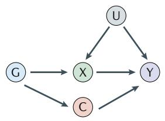
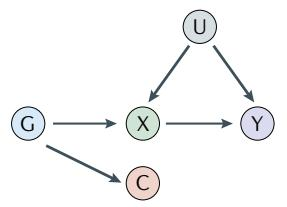
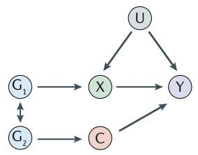
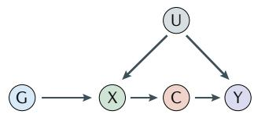
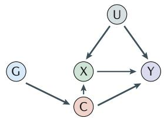
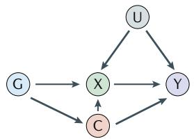

心血管疾病是全球头号杀手。我们需要知道什么因素真正导致了疾病——而不仅仅是"什么因素碰巧与疾病统计相关"。
| 证据类型 | 优势 | 劣势 | MR的角色 |
|---|---|---|---|
| 观察性研究 | 快速、低成本、大样本 | 混杂、反向因果严重： HDL-C与冠心病：观察=保护 → MR=无因果 → RCT全部失败 |
MR可以"校正"观察性结论 |
| RCT（随机对照试验） | 因果推断金标准 | 昂贵、耗时、伦理受限： 不能随机分配人吸烟或酗酒 |
MR可预览RCT结果、研究终身效应 |
| 孟德尔随机化 | 利用天然随机分组 可利用公开GWAS数据 |
依赖不可检验的假设 | — |
三角验证的逻辑：观察性研究（混杂问题）+ RCT（外推问题）+ MR（多效性问题）= 三种方法有不同的偏倚来源。当三者方向一致时，结论可信度最高；当三者矛盾时（如HDL-C），揭露了某种方法的偏倚。
生物学基础（首次出现术语——附解释）：
孟德尔第二定律（独立分配律）：遗传等位基因在配子形成时随机分离。你的基因型在出生时已经固定，且不会被后续的疾病状态改变——这消除了反向因果的可能性。MR利用这种天然的随机化机制来模拟RCT的随机分组。
类比：RCT中抛硬币决定你进"吃药组"还是"安慰剂组"——MR中，大自然在你受孕时替你抛了硬币，决定了你的基因型。这不是完美的随机分组（不能重新抛一次），但在统计上已经足够接近。
完整数值示例：假设你想知道C反应蛋白（CRP）升高是否因果性地增加收缩压（SBP）：
| 步骤 | 计算 | 结果 |
|---|---|---|
| ① G→X：基因使CRP升高多少？ | 从GWAS获取SNP→CRP的β | 每增加一个效应等位基因，CRP升高 0.5 SD |
| ② G→Y：基因使SBP升高多少？ | 从GWAS获取SNP→SBP的β | 每增加一个效应等位基因，SBP升高 2.0 mmHg |
| ③ βMR = ② ÷ ① | 2.0 ÷ 0.5 = 4.0 | CRP每升高 1 SD，SBP升高 4.0 mmHg |
为什么除法有效？G→Y的效应（2.0 mmHg）是"G通过X影响Y"的效应。G→X的效应（0.5 SD）是"G对X的影响力度"。两者相除相当于做了尺度换算——将"基因的尺度"转化到"暴露的尺度"上。这就好比你知道"量杯刻度每厘米代表50毫升"，水面上升了2厘米，你就知道倒了100毫升水。
两个关键术语：
| 假设 | 含义 | 可检验性 | 违反后果 | 类比 |
|---|---|---|---|---|
| ① 相关性 (Relevance) |
遗传变异必须与暴露显著相关：G→X 必须真实存在 | ✅ 可检验 (F统计量>10) |
弱工具变量偏倚——MR估计偏向观察性关联 | 证人必须真的目击了事件 |
| ② 独立性 (Independence) |
遗传变异不与混杂因素相关：G 与 U 必须独立 | ⚠️ 部分可检验 (检查G与已知混杂的关联) |
混杂偏倚——类似于观察性研究的问题 | 证人与被告没有利益关系 |
| ③ 排他性 (Exclusion) |
遗传变异只能通过暴露影响结局：G→X→Y 是唯一通路，G↛Y，G↛U | ❌ 不可直接检验 (需生物学论证+敏感性分析) |
多效性偏倚——最严重也是最常见的威胁 | 证人只能通过自己的目击影响判决，不能贿赂法官 |
MR 的内在张力：这三个假设给了 MR 比观察性研究更强的因果推断力——但第三个假设的不可检验性意味着 MR 的结论永远带有一层不确定性。这就是为什么稳健的 MR 研究必须使用多种敏感性分析，以及与 RCT 和观察性证据进行三角验证。
| 数据源 | 检测对象 | 规模示例 | 在MR中的角色 |
|---|---|---|---|
| GWAS | 数百万SNP × 某个性状（BMI/血压/血脂/疾病） | GIANT BMI GWAS: ~681,000人 CARDIoGRAM CAD GWAS: ~1,166,000人 |
提供 SNP→暴露（βGX）和 SNP→结局（βGY）的效应估计 |
| pQTL | SNP × 蛋白质表达水平 | UKB-PPP: 54,306人, 2923蛋白 CKB: 3,977人, 2923蛋白 |
提供 SNP→蛋白暴露的效应估计 cis-pQTL（基因附近）= MR首选 |
cis-pQTL vs trans-pQTL：cis- 位于编码基因附近（±500kb~1Mb），因为靠近"源头"，通过其他通路影响疾病的可能性较小——水平多效性风险更低。trans- 位于远处染色体区域，可能通过复杂的生物学网络间接发挥作用——多效性风险较大。Yao等人的卒中MR研究仅使用每个蛋白的leading cis-pQTL作为工具变量。
跨种族数据的价值——一个生动的教训：ALDH2 基因的功能缺失突变 rs671 几乎只在东亚人群中有较高频率（MAF ~20-30%）。在Yao等人的研究中，ALDH2 是东亚人群中最强的卒中因果信号（OR=1.60）。但这个靶点在欧洲人群中无法验证——因为该变异频率极低。如果只研究欧洲人群，这个效应最强的卒中靶点将完全遗漏。
| 方法 | 原理 | 优势 | 劣势 |
|---|---|---|---|
| Wald Ratio | 单个SNP：βGY ÷ βGX | 最直观 | 仅适用于单工具变量 |
| IVW（逆方差加权） | 多个Wald比值的加权元分析 | 统计功效最强 | 对多效性敏感——要求所有SNP都是有效工具 |
| MR-Egger 回归 | 回归截距项检验+校正定向多效性 | 可检测方向性多效性 | 功效较低；对异常值敏感 |
| 加权中位数 | 取各SNP估计值的中位数 | 即使50%的SNP无效，仍可给出一致估计 | 对SNP的增减敏感 |
| MR-PRESSO | 检测并移除多效性异常值 | 可识别"坏工具" | 存在多个无效工具时假阳性率高 |
典型双样本MR分析流程：① GWAS中选择独立SNP（P < 5×10⁻⁸, LD clumping r²<0.001, F>10）→ ② 提取暴露+结局GWAS的β和SE → ③ 协调等位基因方向 → ④ IVW主分析 → ⑤ 敏感性分析（MR-Egger + 加权中位数 + MR-PRESSO）→ ⑥ 异质性检验（Cochran Q）→ ⑦ 留一法（逐一剔除每个SNP看结果是否被单个SNP驱动）。
多变量 MR 的原理：同时将遗传变异与多个风险因素的关联纳入同一个模型。这类似于做"多重线性回归"——在调整了其他暴露的遗传效应后，看某个暴露是否仍有独立的因果效应。
中介 MR（两步法）：定量回答"暴露 X 的因果效应有多少比例是通过中介 M 发挥的？"Step 1 = X→M 的因果效应。Step 2 = M→Y 的因果效应。总效应 = 直接效应 + 间接效应（通过M）。在Larsson的CVD综述中，BMI→冠心病的效应有27%通过SBP介导，41%通过2型糖尿病倾向介导。
两种互补范式：
| 范式 | 论文 | 逻辑 |
|---|---|---|
| 广度优先 | Larsson MR-CVD | 102种暴露 × 6种CVD → 筛选谁有因果效应 |
| 深度优先 | Yoshiji 两步MR | 单一因果链（BMI→COL6A3/endotrophin→CAD）的精密量化 |
水平多效性 vs 垂直多效性：这是区分 MR 结论是否有效的最关键概念。
LD（连锁不平衡）的双刃剑：
| 面 | 机制 | 影响 |
|---|---|---|
| 积极 | 相邻SNP"组团行动"→ 测一个标签SNP就代表整个区域 | GWAS芯片只需50-200万SNP就能覆盖约80%的常见变异 |
| 消极 | 两个独立因果变异因LD被"绑定"在一起 | Coloc H3假阳性——统计上看是同一信号，生物学上完全不相关 |
Coloc 共定位——H3 vs H4 的区分：PP4（后验概率H4）> 0.7 = 共享因果变异的强证据（H4 的概率是 H3 的 2.3 倍以上）。Yao 等人的 10 个 IS 因果蛋白中，9 个 PP4 > 0.7（其中 5 个 > 0.95），唯一例外是 ABO（PP4=0.669）。这也是为什么 ABO 被审慎地排除在了"强证据因果靶点"之外。

G 通过两条独立通路影响 Y：G→X→Y 与 G→C→Y。C 是另一表型，不在暴露通路上 → 违反排他性(IV3)，MR 估计有偏。最需警惕的"不纯"工具。

G 虽与 C 相关，但 C 不在 G→Y 的因果通路上（仅统计相关，非因果中介）。MR 估计无偏。

G1 是 X 的工具，却与 G2 处于连锁不平衡(LD)。G2 经独立通路影响 Y，造成的偏倚与 a 在统计上无法区分——这正是 coloc 必须区分 H3 与 H4 的原因。

C 位于 G→X→Y 因果链上（中介变量，可在 X 之前或之后）。不违反排他性，MR 仍然有效——这正是中介 MR 分析的研究对象。

G 实际主要关联 C，却误把 X 当作主表型。C→Y 的替代通路引入偏倚。Steiger 过滤可剔除这类"主表型搞反"的工具。

G 同时关联暴露与暴露-结局的混杂因素，多效性强度与工具-暴露关联强度相关。极难检测，会破坏 MR-Egger 的 InSIDE 假设。
图例：G=遗传变异，X=暴露，Y=结局，U=未测量混杂，C=另一表型。图源：Sanderson et al. (2022) Nat Rev Methods Primers Fig. 3（按原文 2×3 布局还原）。
| 隐含假定 | 含义 | 违反后果 | 应对 |
|---|---|---|---|
| 基因-环境效应等价 (Gene-Environment Equivalence) |
遗传变异改变暴露的效应量 = 环境/药物干预的效应量。例：基因升 BMI 1 kg/m² 对 CVD 的影响 ≈ 节食升 BMI 1 kg/m² | MR 效应量不可直接外推为药物剂量——遗传效应终生温和，药物效应急性且幅度更大。 | 用药物靶点 MR（cis-变异）校准遗传与药理效应。 |
| 无发育补偿 (No Canalization) |
终生遗传暴露未触发代偿（如天生低 LDL-C → LDL 受体表达上调），使表型对外部干预的反应与遗传效应一致。 | MR 可能高估干预效果——身体已适应终生遗传状态。 | 对比 KO 小鼠表型与药物靶点 MR；区分“遗传因果”与“可干预因果”。 |
| 线性与同质性 (Linearity & Homogeneity) |
因果效应在所有暴露水平和亚组中恒定。Wald Ratio/IVW 估计的是平均因果效应。 | U/J 型/阈值 → MR 仅反映工具覆盖范围的平均；亚组异质性 → 总体不代表个体。 | 非线性 MR；分层 MR 按年龄/性别/种族。 |
| 无群体分层 (No Population Stratification) |
GWAS 关联不由祖先差异驱动。 | SNP-暴露与 SNP-结局同时被群体结构混淆 → MR 偏倚。 | 调整主成分(PCs)；家系内 MR；跨种族复制。 |
| 无选择偏倚 (No Selection / Collider Bias) |
样本代表目标人群；参与研究不是 collider（同时受 G 和 U 影响）。 | 选择性入组破坏 G-U 独立性 → 违反 IV2。典型：只研究存活者。 | 全人群代表性队列；多种样本来源敏感性分析。 |
| 无 dynastic 效应 (No Dynastic Effects) |
父母基因型不通过家庭环境间接影响子代表型。 | 父母遗传效应混杂 MR。例：母亲 BMI 基因 → 孕期营养 → 子代代谢，不经子代 BMI。 | 家系内 MR——比较兄弟姐妹遗传差异。 |
实践核查清单：阅读 MR 论文时，除 IV 三大假设外，另问：① 基因效应与药效是否等价？② 是否考虑了非线性/异质性？③ 样本有无选择偏倚？④ 是否排除了 dynastic 效应？
六大领域概览：
| 领域 | 条目数 | 最关键要求 |
|---|---|---|
| 标题与摘要（Title & Abstract） | 条目1 | 在标题/摘要中明确提及"孟德尔随机化" |
| 引言（Introduction） | 条目2-3 | 阐明科学背景、为何选择MR这个研究设计 |
| 方法——数据来源 | 条目4 | 详细描述每个GWAS数据源（样本量、人群、表型定义、基因分型平台）——这是可复现性的关键 |
| 方法——假设与统计 | 条目5-9 | 条目8：工具变量选择标准（P值阈值、LD标准、F统计量） 条目9：统计方法描述（主分析+敏感性分析） |
| 结果（Results） | 条目10-13 | 条目13：报告所有敏感性分析的结果——"IVW是主力，但不能只有IVW" |
| 讨论（Discussion） | 条目14-17 | 条目16：审慎使用因果语言；条目17：讨论可推广性 |
实际使用价值：当审稿/阅读一篇 MR 论文时，可将 STROBE-MR 的 20 个条目作为"审计清单"逐一对照。例如，检查它是否报告了工具变量的 F 统计量（关联性假设）、是否做了 MR-Egger 和留一法（敏感性分析）、是否讨论了多效性的可能影响（排他性假设）。
| 评估维度 | Yao (2025) 的表现 | 评级 |
|---|---|---|
| 条目4：数据来源 | 详细描述了CKB、UKB、BioBank Japan、GIGASTROKE等所有数据源的样本量、人群、表型定义 | 优秀 |
| 条目8：IV选择 | 只用lead cis-pQTL（F>30），给出Bonferroni显著性阈值（P<1.7×10⁻¹¹），LD参考面板明确 | 优秀 |
| 条目9+13：统计方法+敏感性 | MR主分析（Wald ratio）+ coloc（colo+SuSiE）+ 中介 + 跨种族交叉验证 + 新GWAS复制（MEGASTROKE） | 非常全面 |
| 条目16：因果语言 | 使用"genetically predicted levels were causally associated"，措辞审慎 | 适当 |
| 条目17：局限性讨论 | 系统讨论了7条局限性（CKB蛋白遗传工具少、cis-pQTL定义差异、仅用lead SNP、样本有3.5%重叠等） | 全面 |
| 因素 | MR 因果证据 | 关键教训 |
|---|---|---|
| BMI / 肥胖 | 强证据：与全部14种CVD风险增加相关 | Larsson荟萃分析的最一致发现之一 |
| SBP（收缩压） | 强证据：大多数CVD的因果危险因素 | 降压的获益有遗传学支撑 |
| apoB | 强证据：多变量MR中最稳健的致动脉粥样硬化因子 | 可能比LDL-C更好的治疗靶点 |
| Lp(a) | 强证据：IV解释>60%方差，效应独立于apoB | MR驱动了Lp(a)降低疗法的临床试验 |
| HDL-C | 被推翻：调整apoB后无独立因果效应 | 解释了CETP抑制剂的失败——靶向HDL-C的RCT全部失败，MR预见到了 |
| 适度饮酒 | 被推翻：J型曲线是混杂假象 | 中国CKB的ALDH2/ADH1B MR显示饮酒与IS风险呈连续正相关——"没有安全的饮酒量" |
| 身体活动 | 不确定：MR功效不足 | 阴性 ≠ 无因果——工具变量仅解释0.1-0.24%的变异，几乎不可能检测到弱至中等的效应 |
原理：大多数药物通过靶向蛋白质发挥作用，而蛋白质由基因编码 → 该基因区域的 cis 变异可模拟"抑制该蛋白"的药理效应。MR 分析检验：遗传模拟的药物靶点扰动 → 是否降低疾病风险？→ 是否有隐藏的不良反应？
| 药物靶点 | MR预测的疗效 | MR预测的不良反应 | 与RCT的一致性 |
|---|---|---|---|
| HMGCR（他汀类靶点） | 降低冠心病、缺血性卒中、腹主动脉瘤 | 脑出血风险增加 | 一致 |
| PCSK9（PCSK9抑制剂靶点） | 降低冠心病、腹主动脉瘤 | 2型糖尿病风险增加 | 一致 |
| NPC1L1（依折麦布靶点） | 降低冠心病 | 胆石症风险增加 | 一致 |
| LPA（Lp(a)降低疗法靶点） | 降低多种CVD（冠心病、主动脉瓣狭窄、外周动脉疾病） | 可能增加阿尔茨海默病风险（待确认） | RCT正在进行中 |
Lp(a) 是药物靶点 MR 的典范：强工具变量（LPA位点解释>60%的变异）→ 广泛的CVD效应 → 独立于apoB（多变量MR确认）→ MR-PheWAS筛查安全性（UK Biobank 40万人, 1081种结局）→ 支持推进临床试验。
研究设计（8步管道）：
10个IS因果蛋白的分类：
| 类别 | 蛋白 | 意义 |
|---|---|---|
| 已知卒中靶点 | F11 | F11抑制剂（abelacimab）正在II-III期卒中试验中——MR提供了遗传学支持 |
| 可重利用 | ALDH2, MMP12 | 已有针对其他疾病的药物（如disulfiram/ALDH2抑制剂），可重新用于卒中 |
| 全新靶点 | PROCR, GRK5, FGF5, FURIN, KIAA0319, TMPRSS5 | 无任何已知药物——代表全新的药物发现机会 |
| 不可成药 | ABO | 靶向ABO可能改变血型，PP4=0.669也未达强证据阈值 |
两步MR设计：Step 1 = BMI（暴露GWAS）→ 循环蛋白（中介pQTL）→ 筛选BMI因果的蛋白。Step 2 = 这些蛋白 → CAD/卒中/CVD（结局GWAS）→ 筛选疾病因果的蛋白。两步的交集 = 既受BMI调控又因果影响CVD的蛋白。
从3000到1的收敛过程：3283种循环蛋白（SomaScan平台）→ 30种与BMI的遗传工具显著相关的蛋白 → 3种通过Step 2筛选的蛋白 → 1种经过共定位、MVMR和外部复制验证的蛋白：COL6A3来源的endotrophin。
表观基因组学五步证据链（Yoshiji §5.3）：
与Yao的范式对比：
| 维度 | Yao（广度优先） | Yoshiji（深度优先） |
|---|---|---|
| 蛋白数量 | 2923（Olink） | 3283（SomaScan） |
| 疾病 | 缺血性卒中 | 冠心病 |
| 核心方法 | MR+coloc+多重下游 | 两步MR+coloc+表观基因组 |
| 产出 | 10个因果蛋白分类 | 1个因果蛋白的完整因果链 |
| 下游验证 | PheWAS+KO小鼠+DrugBank | ATAC-seq+ChIP-seq+TF预测 |
📍 第一阶段管道（共6步）
| 步骤 | 操作 | 使用的工具/数据 | 关键标准 | 来自哪篇论文 |
|---|---|---|---|---|
| ① | 确定疾病 + 获取 GWAS | 暴露GWAS（如CKB/UKB pQTL） 结局GWAS（如GIGASTROKE IS） |
人群匹配 无样本重叠 |
Sanderson §2 / Larsson §7 （双样本MR设计要求） |
| ② | 识别 cis-pQTL | 蛋白GWAS汇总统计 LD参考面板 |
P < 1.7×10⁻¹¹ ±500kb~1Mb LD clumping r²<0.001 F > 10 |
Yao §2.2 / Sanderson §3 （工具变量选择标准） |
| ③ | 执行两样本 MR | Wald ratio（单SNP） IVW（多SNP元分析） |
以IVW为主分析 | Sanderson §4 / Larsson §9 （Wald ratio→IVW方法） |
| ④ | 全套敏感性分析 | MR-Egger + 加权中位数 + MR-PRESSO + 留一法 |
所有方法方向一致 Cochran Q无显著异质性 MR-Egger截距P>0.05 |
Sanderson §4 / Larsson §9 （敏感性分析流程） |
| ⑤ | Coloc 共定位 | SuSiE精细定位 → coloc PP.H4 |
PP4 > 0.7 （H4比H3至少更可能2.3倍） |
Yao §2.4 / STROBE-MR §3.1 （coloc+SuSiE详解） |
| ⑥ | 种族间交叉验证 | EAS GWAS + EUR GWAS 各自独立MR分析 |
所有蛋白方向一致 （不要求都显著） |
Yao §3.1-3.2 （种族间复制设计） |
🔑 第一阶段输出：
满足三重标准的因果蛋白列表：① MR 在至少一个人群中显著（FDR<0.05）；② coloc PP4 > 0.7（强证据共享因果变异）；③ EAS 和 EUR 中方向一致。Yao 论文中这一阶段从2923种蛋白中筛选出10种IS因果蛋白。
📍 第二阶段管道（共5步）
| 步骤 | 操作 | 使用的工具/数据 | 关键标准 | 来自哪篇论文 |
|---|---|---|---|---|
| ⑦ | 中介分析 | 两步MR（Product方法估计间接效应，Delta方法估计SE） | 报告中介比例 判断主通路 vs 辅通路 |
Larsson §10 / Yoshiji §2 （中介MR方法论） Yao §3.3（蛋白→SBP→卒中） |
| ⑧ | PheWAS | Human Genetic Evidence scores 555种疾病 + 642种表型 |
识别脱靶效应信号 （如靶向某蛋白可能 同时升高血糖） |
Yao §3.4 （PheWAS下游验证） |
| ⑨ | 组织表达验证 | GTEx数据库 ATAC-seq + ChIP-seq |
蛋白在疾病相关组织中表达 调控区域为常染色质（开放） H3K4me3+H3K27ac双标记 |
Yoshiji §5.3 （表观基因组学五步证据链） Yao §3.4（GTEx查询） |
| ⑩ | KO 小鼠表型 | IMPC数据库 单基因敲除小鼠表型数据 |
敲除该基因的小鼠出现 预期的心血管/血液表型 |
Yao §3.5 （KO小鼠交叉验证） |
| ⑪ | 药物数据库查询 | DrugBank + OpenTargets | 四分类：已知靶点 / 可重利用 / 全新 / 不可成药 |
Yao §3.5 （可成药性评估框架） |
🔑 第二阶段输出：
每个因果蛋白的五维档案——因果通路（中介比例）、安全性（PheWAS脱靶信号）、生物学合理性（组织表达+表观基因组）、体内功能证据（KO小鼠表型）、可成药性（DrugBank/OpenTargets）。将蛋白分类为四个优先级：已知靶点（直接推进临床）、可重利用（推进II期）、全新靶点（需先做体外/体内功能验证）、不可成药（放弃或仅作生物标志物）。
PheWAS 的核心逻辑是脱靶效应筛查——用同一个基因工具扫描所有其他表型。疗效 = 靶点对目标疾病的因果效应（MR 主分析），安全性 = 靶点对所有其他表型的因果效应（PheWAS）。经典案例：PCSK9 遗传变异降低 CHD 风险（疗效 ✓），但 PheWAS 发现同时增加 T2D 风险（安全性 ⚠️）——RCT 后来证实了这一预测。结果判断：PheWAS 干净 → 安全性初步通过；PheWAS 有信号 → 需结合组织表达和 KO 小鼠交叉印证。
MR 是统计推断，不能证明生物学基础。组织表达验证有三层递进逻辑：①位置对不对？GTEx 跨组织表达图谱——如果 PROCR 只在肝脏表达、在血管和脑中不表达，则"PROCR→卒中"缺少物理载体。②开关开了没有？ATAC-seq（染色质可及性）+ ChIP-seq H3K4me3/H3K27ac（活性启动子/增强子）——证明驱动蛋白的 SNP 在疾病相关组织中处于"活跃"而非"沉默"状态。SNP 落在异染色质区域 → 即使 MR 显著，更可能是 LD 搭车客（H3 假阳性）。③区分 LD 伪影——真实因果（PROCR 在动脉高表达 + 调控区开放）vs LD 伪影（PROCR 在血管中不表达，MR 信号来自隔壁基因）。
PROCR 的完整旅程（11步全管道）：
| 步骤 | 操作 | PROCR 的具体情况 |
|---|---|---|
| ① | 疾病+GWAS | 疾病=缺血性卒中（IS）；暴露GWAS=UKB PPP的PROCR pQTL；结局GWAS=GIGASTROKE EUR IS（62,100病例） |
| ② | cis-pQTL识别 | rsXXXX 是PROCR的leading cis-pQTL（UKB中F>45） |
| ③ | 两样本MR | Wald ratio：遗传预测的每SD PROCR升高 → IS风险降低11%（OR=0.89, 95%CI 0.85-0.94）🧬 保护性蛋白 |
| ④ | 敏感性分析 | 方向在EAS和EUR中一致；MEGASTROKE复制中保持名义显著 |
| ⑤ | Coloc共定位 | PP4 = 0.991 → H4证据极强：99.1%的概率是PROCR的同一个因果变异同时影响蛋白水平和卒中风险 |
| ⑥ | 种族间交叉验证 | 方向在EAS中一致（虽未达EAS显著性阈值——CKB样本量较小） |
| ⑦ | 中介分析 | PROCR→IS 的效应仅1%通过SBP介导 → PROCR主要通过非血压通路发挥保护作用（很可能与抗凝/细胞保护有关） |
| ⑧ | PheWAS | PROCR与心血管疾病、肾功能、人体测量表型相关 → 需关注潜在脱靶效应，尤其是肾脏功能 |
| ⑨ | 组织表达验证 | GTEx：PROCR在肾脏、脂肪组织和心血管系统中高表达 → 生物学上合理 |
| ⑩ | KO小鼠表型 | IMPC：PROCR敲除小鼠出现造血表型异常 → 进一步支持其在血液/血管生物学中的功能 |
| ⑪ | 药物数据库 | DrugBank/OpenTargets：当前没有直接靶向PROCR的药物 → 全新靶点。 但PROC（蛋白C）激活剂3K3A-APC正在急性IS的II期试验中（NCT02222714），即将进入III期 → PROCR激动剂具有明确的临床转化路径 |
PROCR 靶点档案总结：
| 维度 | 评估 |
|---|---|
| 因果证据 | 极强（OR=0.89, PP4=0.991, 种族间方向一致） |
| 作用机制 | 主要通过非血压通路（抗凝/细胞保护），SBP介导仅1% |
| 安全性 | 需关注肾脏和造血系统的脱靶效应（PheWAS+KO小鼠提示） |
| 可成药性 | 全新靶点，但PROC激活剂已有II期数据——提供了一条清晰的转化捷径 |
| 优先级 | 高——推荐优先推进体外PROCR激动剂筛选和体内功能验证 |
AI + MR 的独特协同：LLM擅长从海量文献中综合知识并产生假设，但也可能产生幻觉（"自信地编造"不存在的关系）。MR提供了一种系统化的方法来验证这些AI生成的假设——在被LLM提出的大量候选靶点中，MR可以筛选出有遗传因果证据支持的那些。多模态基础模型（Cui 2025）代表了这一融合的终极愿景——将基因组学、蛋白质组学、影像学、临床记录统一到单一AI框架中，而MR嵌入其中作为因果推理引擎。
从"手工MR"到"自动化科学发现"的演化光谱：
| 阶段 | 方式 | 代表论文 |
|---|---|---|
| 1. 手工MR | 人类科学家选择暴露、选择工具变量、运行分析、解读结果 | Larsson, Sanderson, STROBE-MR |
| 2. 半自动MR | 人类设定框架，AI执行大规模筛选和下游验证 | Yao, Yoshiji |
| 3. 全自动科学发现 | AI自主产生假设、设计实验、分析数据、迭代优化——MR嵌入其中作为因果验证模块 | ROBIN, LyMOI |